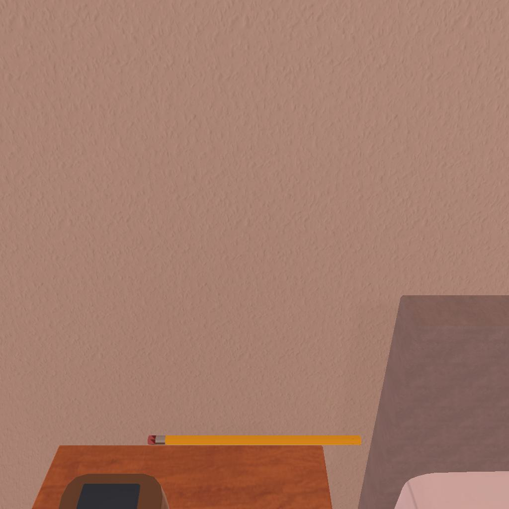
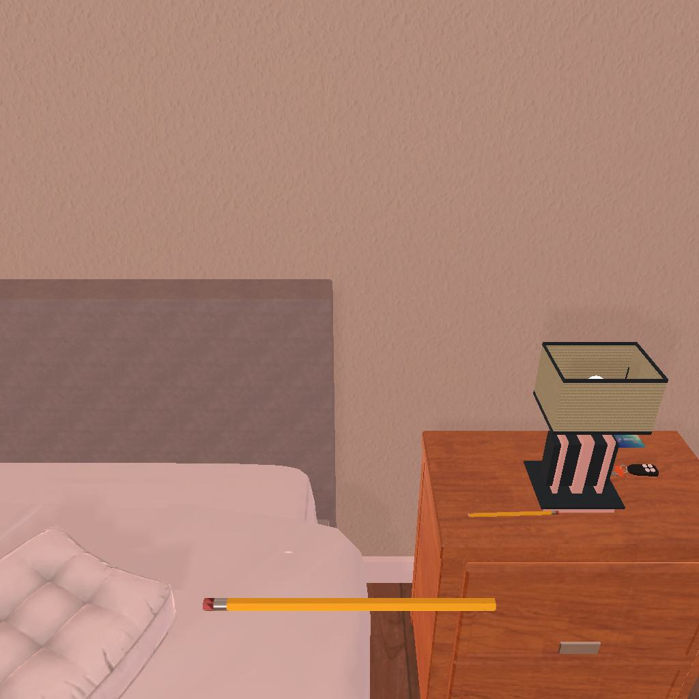
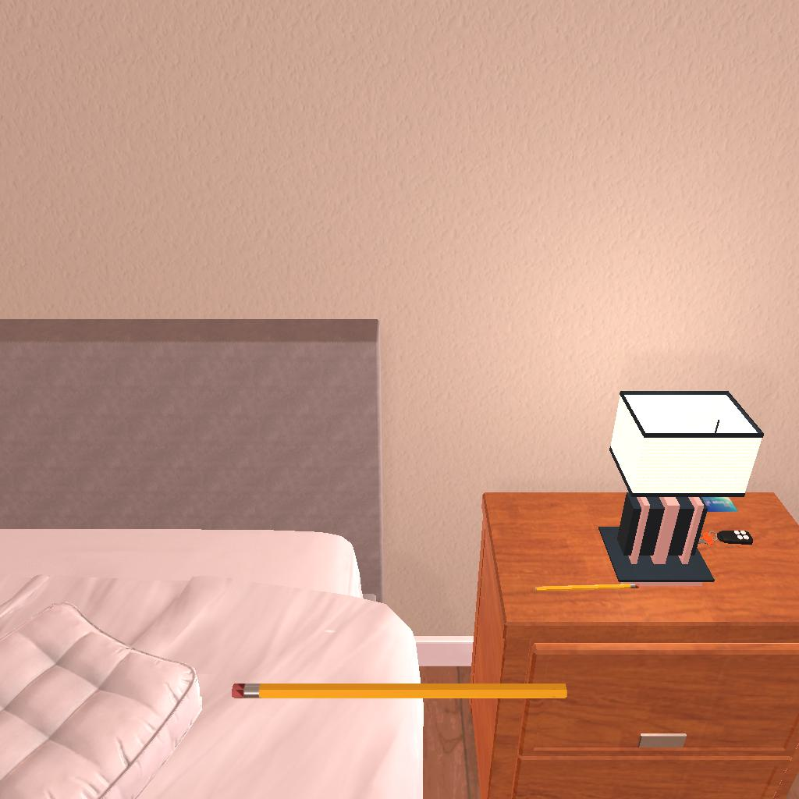

---------------------------------------------------------task: 2---------------------------------------------------------
--------------------------------------------------------------------------------------------------------------------------------------------------------------------
--------------------------------------------------------------------------------------------------------------------------------------------------------------------
Step:--------------------------------------------------------------------------5-------------------------------------------------------------------------------
----------------------------------------
VLM Prompt:
Image1:
Image2:
Image3:
**Instruction**
1. Analyze the provided images to identify all visible household objects and compare the difference between images (e.h. whether the object is opened or not and taken on hand or not), focusing on those relevant to the task description "examine the pen with the desklamp."
2. Use the analysis of images and the task hint "The agent must find an object of the desired type, locate and turn on a light source with the desired object in-hand." to answer the question: what is the most reasonable action in the choices for the task description "examine the pen with the desklamp"?
3. Decide and write the answer using the template: The answer is: (i): , where i is the real number. If there is no desired object in images, search every place based on **Initial Observation** to find the object. And if no one is exactly correct, choose a similar answer.
**Initial Observation**
You are in the middle of a room. Looking quickly around you, you can see bed (1-2), dresser (1), drawer (1-11), sidetable (1-2), desk (1), garbagecan (1), safe (1)
**Answer Choices**
(1): go to bed 1
(2): go to dresser 1
(3): go to bed 2
(4): go to drawer 1
(5): go to drawer 2
(6): go to drawer 3
(7): go to drawer 4
(8): go to desk 1
(9): go to garbagecan 1
(10): go to drawer 5
(11): go to drawer 6
(12): go to drawer 7
(13): go to drawer 8
(14): go to drawer 9
(15): go to drawer 10
(16): go to drawer 11
(17): go to safe 1
(18): put pencil 1 in/on sidetable 2
(19): use desklamp 1
(20): examine pencil 1
(21): examine sidetable 2
**Answer**
Let's think step by step by following the instructions.
----------------------------------------
----------------------------------------
Original Response:
1. In Image 1, we can see a desk with a pencil, a cap, and a mug on it. In Image 2, the mug and cap are removed, and the pencil remains on the desk. In Image 3, we see the same desk with a pencil, but now there is also a lamp and a notepad with a pen on top of the desk. The desk lamp appears to be turned off.
2. Based on the task description "examine the pen with the desklamp," the agent must find a pen, which is visible in Image 3 on the desk, and then locate and turn on a light source, which is the desk lamp also visible in Image 3.
3. The most reasonable action for the task "examine the pen with the desklamp" would be to first go to the desk where the pen and desklamp are located, and then use the desklamp to examine the pen.
The answer is: (19): use desklamp 1.
----------------------------------------
----------------------------------------
>>> Refine Original VLM Response and Get Pure Action: use desklamp 1
----------------------------------------
-----------------------------------------------------------------
Running time: 11.441537141799927 seconds
Total Money: 0.86182
-----------------------------------------------------------------
-----------------------------------------------------------------
Text Observation:You turn on the desklamp 1.
-----------------------------------------------------------------
SUCCEED